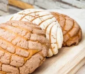

Conchas Recipe

by maria acevedo

Conchas are traditional Mexican sweet bread rolls (a.k.a. pan dulce). Its name comes from the roll’s seashell-like appearance. Conchas consist of a sweet bread base and crunchy sugar topping.